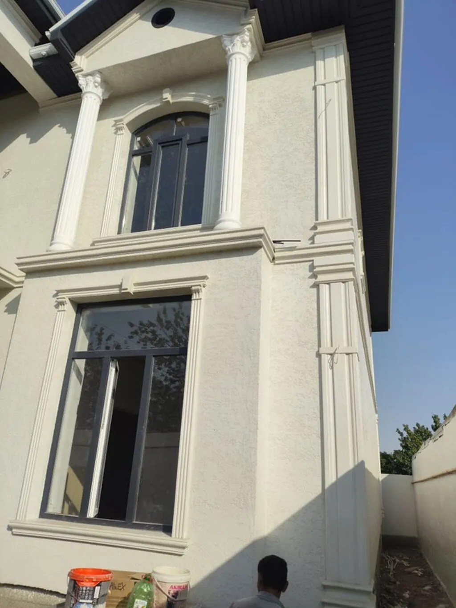
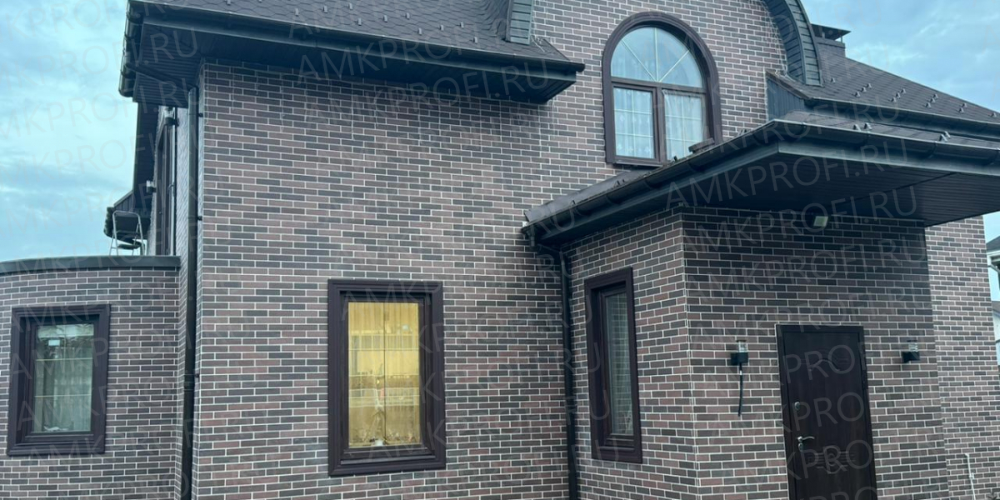

Fațade Decorative pentru Case din Moldova
📅 10 Iulie 2026 | ⏱️ 9 minute | 📍 Chișinău, Bălți, Cahul | ✍️ Valmex.md
Fațada casei este cartea de vizită a proprietarului. În Republica Moldova, unde arhitectura tradițională se îmbină din ce în ce mai mult cu tendințele moderne, fațadele decorative au devenit o alegere populară pentru renovări și construcții noi. Fie că locuiești în Chișinău, Bălți, Cahul sau într-un sat pitoresc din Moldova, o fațadă decorativă bine executată transformă complet aspectul casei tale. Acest ghid îți prezintă tot ce trebuie să știi despre fațadele decorative, cu focus special pe tencuiala siliconată — cea mai populară soluție din Moldova.
Ce Sunt Fațadele Decorative?
Fațadele decorative sunt sisteme de finisare exterioară care combină funcționalitatea (protecție termică, hidroizolație, rezistență mecanică) cu estetica (texturi, culori, efecte speciale). În Moldova, cele mai răspândite tipuri de fațade decorative sunt:
- Tencuială decorativă siliconată — cea mai populară, versatilă și durabilă soluție
- Tencuială decorativă acrilică — variantă economică, dar cu durabilitate redusă
- Tencuială decorativă minerală — ideală pentru case tradiționale și renovări istorice
- Tencuială decorativă silicat-siliconată — combinație optimă preț-performanță
- Panouri AMK — soluție modernă, premium, detaliată în articolul dedicat


Exemple de fațade decorative realizate de echipa Valmex.md în Republica Moldova
Tencuiala Decorativă Siliconată — Alegerea Nr. 1 în Moldova
Tencuiala decorativă siliconată a câștigat rapid popularitate în Republica Moldova datorită caracteristicilor sale excepționale, perfect adaptate climei continentale a țării. Iată de ce este alegerea preferată a constructorilor și proprietarilor de case din Chișinău, Bălți și întreaga Moldovă:
1. Permeabilitate la Vapori (Respirabilitate)
Spre deosebire de tencuielile acrilice sau vopselile obișnuite, tencuiala siliconată permite peretelui să "respire". Acest lucru este crucial în Moldova, unde diferențele de temperatură între interior și exterior pot genera condens. Permeabilitatea la vapori previne mucegaiul și degradarea structurii peretelui.
2. Rezistență la Mucegai și Alge
Datorită compoziției siliconice, această tencuială este natural hidrofobă. Apa nu pătrunde în stratul de tencuială, ci se scurge pe suprafață. Această proprietate o face ideală pentru zonele cu umiditate ridicată din Moldova — luncile Nistrului și Prutului, zonele de codru și casele cu subsoluri umede.
3. Elasticitate și Rezistență la Crăpături
Clima din Moldova aduce variații extreme de temperatură — de la -25°C iarna la +40°C vara. Tencuiala siliconată are o elasticitate de până la 300%, ceea ce înseamnă că se dilată și contractă odată cu peretele, fără să se crape. Acest lucru o face superioară tencuielii acrilice, care se crapă după 3–5 ani în condiții similare.
4. Efect de Auto-Curățare
Suprafața siliconată este netedă la nivel microscpic, ceea ce împiedică praful și murdăria să adere. La fiecare ploaie, suprafața se "spală" natural. Acest efect de auto-curățare reduce nevoia de întreținere și menține fațada proaspătă ani de zile — un avantaj major pentru casele din zonele cu trafic intens (Chișinău, Bălți, Ungheni).
5. Paletă Extinsă de Culori și Texturi
Tencuiala decorativă siliconată este disponibilă în peste 500 de nuanțe și mai multe tipuri de granulație (1,0 mm, 1,5 mm, 2,0 mm, 2,5 mm, 3,0 mm). Granulația mai mică oferă un aspect neted, elegant, perfect pentru casele moderne. Granulația mai mare creează un aspect rustic, ideal pentru casele tradiționale moldovenești.
💡 Sfatul Specialistului Valmex
Pentru casele din zonele cu soare intens (sudul Moldovei — Cahul, Comrat, Ceadîr-Lunga), recomandăm tencuiala siliconată în nuanțe deschise (bej, crem, gri deschis). Culorile deschise reflectă căldura și previn decolorarea prematură. Pentru nordul Moldovei (Bălți, Edineț), puteți alege orice nuanță, inclusiv cele închise.
Tipuri de Texturi pentru Fațade Decorative în Moldova
Alegerea texturii depinde de stilul arhitectural al casei și de preferințele personale:
| Tip Textură | Granulație | Preț (lei/m²) | Stil Recomandat |
|---|---|---|---|
| „Barașek" (scoarță de copac) | 2,0–3,0 mm | 120–160 | Case tradiționale, vile rustice |
| „Koroed" (lemn atacat de cari) | 2,0–3,5 mm | 130–170 | Case moderne, minimalist |
| „Marmorino" (efect marmură) | 0,5–1,0 mm | 180–250 | Case de lux, proiecte premium |
| Neted (smooth) | 1,0–1,5 mm | 100–140 | Case contemporane, blocuri |
| „Shuba" (tufa) | 2,5–4,0 mm | 140–190 | Case rustice, pensiuni |
Procesul de Aplicare a Tencuielii Decorative în Moldova
Echipa Valmex.md aplică tencuiala decorativă siliconată respectând un proces riguros, adaptat condițiilor climatice din Republica Moldova:
- Pregătirea suprafeței — curățare, îndepărtarea stratului vechi, tratarea crăpăturilor, aplicare grund
- Izolația termică (opțional, dar recomandată) — polistiren extrudat sau vată minerală de 50–100 mm
- Armarea — plasă de fibră de sticlă înglobată în adeziv, pentru prevenirea crăpăturilor
- Gletuire — nivelarea suprafeței pentru aplicarea tencuielii decorative
- Aplicare grund de tencuială — uniformizarea absorbției și crearea aderenței
- Aplicare tencuială decorativă — cu mistria sau mașină de tencuit, în strat de 2–3 mm
- Formarea texturii — cu drisca plastică sau burete, în funcție de efectul dorit
- Uscare și finisare — 24–48 ore, în funcție de temperatură și umiditate
- Aplicare vopsea de protecție (opțional) — pentru efecte speciale sau culori personalizate
⚠️ Atenție!
Tencuiala decorativă siliconată trebuie aplicată la temperaturi între +5°C și +30°C, cu umiditate relativă sub 80%. În Moldova, perioada optimă de aplicare este aprilie–octombrie. Aplicarea la temperaturi sub +5°C sau pe suprafețe umede duce la probleme grave de aderență și decolorare. Valmex.md monitorizează constant condițiile meteorologice în toate zonele unde lucrăm.
Cât Costă o Fațadă Decorativă în Moldova în 2026?
Calcul estimativ pentru o casă cu 120 m² de fațadă în Chișinău, cu tencuială siliconată și izolație termică:
- Pregătire suprafață + grund — 120 m² × 35 lei = 4.200 lei
- Izolație termică (polistiren 80 mm + adeziv + plasă) — 120 m² × 120 lei = 14.400 lei
- Tencuială decorativă siliconată (granulație 2,0 mm) — 120 m² × 140 lei = 16.800 lei
- Manoperă profesională — 120 m² × 65 lei = 7.800 lei
- Schele și protecții — 3.500 lei
Total estimativ: ~46.700 lei (inclusiv TVA)
Pentru o ofertă personalizată, folosește Calculatorul de Fațadă Valmex sau contactează-ne direct.
Întreținerea Fațadelor Decorative în Moldova
Pentru a prelungi durata de viață a fațadei decorative, urmează aceste sfaturi:
- Spălare anuală — cu apă și perie moale, mai ales în zonele cu praf (drumuri naționale, construcții în apropiere)
- Inspecție după iarnă — verifică eventualele deteriorări cauzate de îngheț-dezgheț, frecvent în Moldova
- Repararea promptă a zgârieturilor — aplică tencuială de retuș pentru a preveni infiltrarea apei
- Evitarea contactului cu soluții agresive — nu folosi detergenți abrazivi sau acizi
- Vopsire de întreținere la 10–15 ani — aplicarea unui strat de vopsea siliconică refreshează aspectul
Cum să Alegi Culoarea Fațadei pentru Casa Ta din Moldova
Alegerea culorii fațadei este o decizie importantă, care influențează aspectul casei tale zeci de ani. Iată câteva sfaturi de la specialiștii Valmex.md:
- Case tradiționale moldovenești — nuanțe calde: ocru, teracotă, bej, verde măsliniu. Se potrivesc perfect cu acoperișurile roșii sau maro.
- Case moderne în Chișinău — griuri (de la gri deschis la antracit), alb, negru mat. Combină excelent cu panouri AMK sau sticlă.
- Vile în zonele de deal ale Moldovei — culori naturale: piatră, nisip, verde pădure. Se integrează armonios în peisaj.
- Case în zonele cu soare intens (sud) — culori deschise pentru a reflecta căldura. Evită negrul și albastru închis.
- Case în zonele cu ierni geroase (nord) — orice nuanță funcționează. Culorile închise absorb căldura soarelui de iarnă, reducând costurile de încălzire.
Concluzie
Fațadele decorative, în special tencuiala siliconată, reprezintă o investiție inteligentă pentru orice casă din Republica Moldova. Oferind un raport excelent între preț, durabilitate și estetică, această soluție transformă radical aspectul casei tale, oferind în același timp protecție termică și hidroizolație. Echipa Valmex.md execută fațade decorative în toată Moldova — de la Chișinău la Bălți, de la Cahul la Soroca — cu materiale premium, manoperă impecabilă și garanție reală. Contactează-ne pentru o consultație gratuită și descoperă cum putem transforma fațada casei tale!
🎨 Vrei o Fațadă Decorativă în Moldova?
Echipa Valmex.md oferă consultație gratuită și ofertă personalizată pentru fațade decorative în toată Republica Moldova. Sună acum sau solicită ofertă online!
📞 Sună Acum: +373 78 026 212Sau trimite cerere online — răspundem în 30 de minute
Articole similare

Tot Ce Trebuie să Știi Despre Panourile AMK
Ce sunt panourile AMK, cum se montează și de ce sunt o investiție excelentă pentru fațada casei tale din Moldova.

Cum să Alegi Țigla Metalică Potrivită
Ghid complet pentru alegerea țiglei metalice în funcție de buget, stil arhitectural și condiții climatice din Moldova.

Cât Durează un Acoperiș Metalic?
Durata de viață a acoperișului metalic și factorii care o influențează în condițiile din Republica Moldova.